임산가공기사 (2016-10-01 기출문제)
1과목: 목재이학
1. 목재의 각 방향에 따른 수축률의 크기를 바르게 나열한 것은?
- 접선방향＞방사방향＞섬유방향
- 접선방향＞섬유방향＞방사방향
- 섬유방향＞방사방향＞접선방향
- 방사방향＞섬유방향＞접선방향
(정답률: 72%)

2. 목재의 비열에 가장 크게 영향을 주는 인자는?
- 수종
- 밀도
- 함수율
- 춘재 및 추재 구성정도
(정답률: 64%)
3. 다공질 재료를 흡음재료로 사용하는 데 있어서 주의사항으로 옳지 않은 것은?
- 재료 표면의 세공을 메우거나 두꺼운 도장을 하지 말 것
- 두꺼운 도장을 할 경우에는 관통하지 않는 구멍을 뚫어 실질부를 노출할 것
- 판상재료의 경우 판진동에 의한 저음역소음이 발생하므로 배후에 공기층이 없도록 할 것
- 관통 구멍이 있는 얇은 합판 등을 덮을 경우에는 구멍의 개구율을 30% 이상으로 할 것
(정답률: 65%)
4. 목재의 강도적 성질에 영향을 주는 인자에 대한 설명으로 옳지 않은 것은?
- 비중이 클수록 목재의 강도는 증가한다.
- 온도가 상승하면 목재의 강도는 감소한다.
- 함수율이 작을수록 목재의 강도는 증가한다.
- 마이크로피브릴 경사각이 클수록 목재의 강도는 증가한다.
(정답률: 58%)
5. 생재비중(S)을 알고 있는 목재의 최저함수율을 구하는 식은?
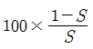
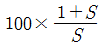
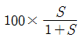
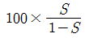
(정답률: 71%)
6. 4.5kg의 목재를 20℃에서 90℃까지 올리는 데 필요한 열량은? (단, 이 목재의 비열은 0.3066cal/g℃임)
- 97cal
- 96579cal
- 966kcal
- 96579kcal
(정답률: 56%)
7. 목재의 함수율을 측정하는 전기식 수분계에 대한 설명으로 옳지 않은 것은?
- 목재의 전기적 성질을 이용한 것이다.
- 저항식 수분계와 용량식 수분계가 있다.
- 전건법에 의한 함수율 측정법보다 정밀한 방법이다.
- 휴대용으로 목재를 절단하지 않고 현장에서 바로 측정할 수 있다.
(정답률: 79%)
8. 목재의 열팽창에 대한 설명으로 옳은 것은?
- 치밀한 목재는 가벼운 목재보다 열팽창이 더 작다.
- 함수율 20% 이내에서 함수율이 증가하면 선팽창률은 감소한다.
- 목재의 온도상승에 의한 지수변동은 선팽창, 면적팽창으로 2가지가 있다.
- 횡단방향 선팽창률은 섬유방향 선팽창률보다 크며 일반적으로 이방도는 10:1정도이다.
(정답률: 52%)
9. 수분에 의한 목재치수의 변화를 계산하는 데 이용되지 않는 것은?
- 수축률
- 상대습도
- 평형함수율
- 생재함수율
(정답률: 37%)
10. 목재는 탄성한계 내의 작은 응력에서도 외력이 장시간 작용하면 변형이 증가하게 되는데, 이는 목재의 어떤 성질 때문인가?
- 탄성적 성질
- 취성적 성질
- 점탄성적 성질
- 탄소성적 성질
(정답률: 69%)
11. 6cm×6cm의 횡단면에 7000kgf의 하중이 작용하여 16cm이던 목재가 15.97cm로 압축되었다. 이때 이 목재의 탄성계수(kgf/cm2)는?
- 약 87500
- 약 103700
- 약 233330
- 약 525000
(정답률: 46%)
12. 다음 조건에서 생재 소나무 널결판재의 수축량은?
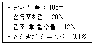
- 0.62mm
- 1.24mm
- 2.48mm
- 3.72mm
(정답률: 35%)
13. 수분에 의한 목재의 수축과 팽윤에 대한 설명으로 옳지 않은 것은?
- 수축량은 일반적으로 세포내강에서 제거된 수분용적에 비례한다.
- 목재가 수축하거나 팽윤하여도 세포내강의 지름은 거의 일정하게 유지된다.
- 무응력 상태의 작은 목재에서 수축과 팽윤은 동일한 양으로 역전될 수 있다.
- 세포벽의 수축은 물 분자가 셀룰로오스와 헤미셀룰로오스 분자들에서 이탈하면 분자 간 거리가 접근되면서 발생한다.
(정답률: 38%)
14. 진비중을 측정하기 위해 사용하는 치환물질 중 진비중이 가장 크게 나타나는 물질은?
- 물
- 벤젠
- 헬륨
- 톨루엔
(정답률: 50%)
15. 목재의 열전도율에 대한 설명으로 옳은 것은?
- 절대온도에 비례한다.
- 비중이 증가함에 따라 감소한다.
- 함수율이 증가함에 따라 감소한다.
- 섬유주향에 따라 영향을 받지 않는다.
(정답률: 43%)
16. 목재의 평형함수율에 대한 설명으로 옳지 않은 것은?
- 흡습량과 방습량이 동일한 상태이다.
- 평형함수율은 수종에 따라서 변한다.
- 상대습도가 높을수록 평형함수율은 크다.
- 우리나라에서는 4월 정도가 최저이고 8월 정도가 최고이다.
(정답률: 44%)
17. 시편의 전건비중이 0.6이고, 진비중이 1.5일 때 공극률은?
- 0.4
- 0.5
- 0.6
- 0.7
(정답률: 55%)
18. 목재의 전건무게와 기건체적을 기준으로 계산하는 비중은?
- 진비중
- 생재비중
- 전건비중
- 기건비중
(정답률: 56%)
19. 목재 내의 함유수분에 대한 설명으로 옳지 않은 것은?
- 세포내강 등의 빈 공간에 들어있는 물을 자유수라고 한다.
- 모세관 현상에 의하여 세포벽의 미세공극에 들어있는 수분을 모세관수라 한다.
- 수소결합 등을 통하여 목재의 구성성분들과 붙어있는 수분을 결합수라고 한다.
- 목재 성분의 화학적 조성을 완전히 분해 시켜야 분리할 수 있는 수분은 구조수이다.
(정답률: 49%)
20. 목재의 응력-변형률도에 대한 설명으로 옳은 것은?
- 비례한계와 탄성한계는 기본적으로 같은 개념이다.
- 목재 파괴 시의 응력을 파괴응력 또는 항복 응력이라 한다.
- 모든 물체는 외력이 작용하면 변형이 수반되고 외력이 제거되면 변형은 완전히 회복된다.
- 비례한계는 응력과 변형간의 직선관계가 성립되는 한계점을 말하고, 비례한계 내에서 응력이 제거되면 변형은 순간적으로 회복된다.
(정답률: 42%)
2과목: 목재해부학
21. 다음 ( )에 해당하는 용어는?
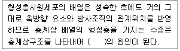
- 이상재
- 리플마크
- 권모목리
- 비대생장
(정답률: 54%)
22. 활엽수재의 세포 중 횡단면상에서 광학현미경으로 구분이 거의 불가능한 세포를 올바르게 짝지은 것은?
- 목섬유와 도관요소
- 목섬유와 방사조직
- 도관요소와 도관상가도간
- 도관요소와 축방향유세포
(정답률: 49%)
23. 침엽수재 가도관의 구성 비율은?
- 60~68%
- 70~78%
- 80~88%
- 90~98%
(정답률: 56%)
24. 목재 가공과정에서 제재자의 부주의에 의해 나타나는 목리는?
- 통직목리
- 교착목리
- 사주목리
- 나선목리
(정답률: 52%)
25. 활엽수재의 수평방향에 분포하는 유세포는?
- 방사유세포
- 방추형유세포
- 축방향유세포
- 에피델리얼세포
(정답률: 30%)
26. 침엽수재와 활엽수재 조직의 차이점으로 옳지 않은 것은?
- 활엽수재는 가도관이 존재하지 않는다.
- 활엽수재의 방사조직은 방사가도관이 없다.
- 침엽수재의 세포 배열은 모두 비층계상이다.
- 침엽수재의 축방향유조직은 일부 수종에만 현저하며 배열형도 산재, 접선상 등으로 단순하다.
(정답률: 45%)
27. 목재의 3단면 중 목리에 직각이 되도록 잘라낸 단면은?
- 횡단면
- 추정면
- 방사단면
- 접선단면
(정답률: 43%)
28. 활엽수재의 방사유세포에 대한 설명으로 옳은 것은?
- 배열이 단순하다.
- 형태의 변이성이 작다.
- 방사가도관이 존재한다.
- 변재에서 양분 저장 기능을 갖고 있다.
(정답률: 43%)
29. 열대 활엽수재의 대부분과 국내 활엽수재의 60% 이상이 갖는 판공의 형태는?
- 환공재
- 산공재
- 방사공재
- 문양공재
(정답률: 49%)
30. 가도관이나 목섬유의 세포벽층 가운데 리그닌이 가장 많은 양으로 존재하는 곳은?
- 1차벽
- 2차벽
- 세포간층
- 세포내강
(정답률: 49%)
31. 다음 설명에 해당하는 특수형의 방사조직은?
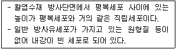
- 타일세포
- 책상세포
- 초상세포
- 쇄상세포
(정답률: 47%)
32. 세포의 생활력이 상실되어 수체 지지의 기계적 기능을 담당하는 조직부분은?
- 변재
- 심재
- 이상재
- 반응재
(정답률: 60%)
33. 주로 열대재의 유세포 중에 존재하며 목재의 절삭가공 시 절삭기구의 칼날 마모를 촉진시키고 해충 저항성을 나타내게 하는 것은?
- 결정
- 수지
- 실리카
- 격벽목섬유
(정답률: 55%)
34. 활엽수재에서 작은 지름이 관공이 부분적으로 밀집하여 화염상, X자상, 그물모양 등으로 나타나는 것은?
- 환공재
- 산공재
- 방사공재
- 문양공재
(정답률: 52%)
35. 활엽수재 방사조직의 함유량은?
- 5% 미만
- 5~15%
- 20~30%
- 30% 이상
(정답률: 39%)
36. 침엽수재 형성층의 방추형 시원세포가 성숙해서 된 목부세포는?
- 방사유세포
- 방사가도관
- 수평수지구
- 축방향가도관
(정답률: 40%)
37. 활엽수재를 횡단면에 나타난 세포 배열에 따라 산공재, 환공재 등으로 나누는데 어ᄄᅠᆫ 세포의 배열에 따라 분류하는 것인가?
- 도관
- 유세포
- 수지구
- 목섬유
(정답률: 54%)
38. 침엽수재의 방사가도관에 대한 설명으로 옳지 않은 것은?
- 유연변공을 가진다.
- 방사조직 내에 방사유세포와 크기가 비슷하다.
- 장축이 방사방향인 세포가 존재하는 경우도 있다.
- 전나무에 주로 발생하며 소나무는 거의 발생하지 않는다.
(정답률: 54%)
39. 활엽수재의 도관에 인접한 유세포가 벽공벽을 파괴하여 도관 내강 속으로 생장하여 형성되는 조직은?
- 검물질
- 크라슐래
- 타이로시스
- 타일로소이드
(정답률: 46%)
40. 비정상적으로 온난한 기후가 늦여름과 가을에 이례적으로 나타나 수목이 다시 생장을 계속하여 한 개 연륜 내에 두 개 이상의 생장륜을 형성하는 연륜은?
- 위심재
- 이행재
- 위연륜
- 이행륜
(정답률: 47%)
3과목: 목재화학
41. 활엽수재 리그닌의 C6-C3 단위당 작용기의 수가 가장 많은 것은?
- 카르보닐기
- 벤질알코올기
- 페놀성수산기
- 메톡실기
(정답률: 50%)
42. 펙틴(Pectic)에 대한 설명으로 옳지 않는 것은?
- Polygalacturonic acid가 주 성분을 이룬다.
- 목재의 주 성분 중 하나이다.
- arabinose와 galactose를 소량 포함한다.
- 세포 중간층에 주로 존재한다.
(정답률: 63%)
43. 셀룰로오스의 반응 형태에 대한 설명으로 틀린 것은?
- 가수분해는 셀룰로오스 사슬의 분해를 의미하며 유도체화 반응은 주로 셀룰로오스의 수산기에서 반응하여 일어난다.
- 셀룰로오스를 고온에서 묽은 알칼리에 반응시키면 필링오프 반응이 일어날 수 있다.
- 셀룰로오스는 묽은 산에는 용해되지만 진한 산에는 용해되지 않는 불균일계 반응을 한다.
- 셀룰로오스는 균이 분비하는 효소에 의해 가수분해될 수 있다.
(정답률: 68%)
44. 셀룰로오스에 대한 설명으로 옳지 않은 것은?
- 천연 셀룰로오스는 마이크로피브릴로 구성되어 있다.
- 셀룰로오스는 양 단말기를 제하고는 각 환(環)에 3개의 수산기가 존재한다.
- 셀룰로오스는 아세톤, 클로로포름에 용해된다.
- Glucopyranose의 1번 탄소와 다른 Glucopyranose의 4번 탄소가 에테르 결합한 것이다.
(정답률: 56%)
45. 목재 셀룰로오스를 17.5% NaOH로 처리하면 용해되는 부분과 용해되지 않는 부분이 생기게 된다. 이때 용해되지 않는 부분을 무엇이라고하는가?
- α-셀룰로오스
- β-셀룰로오스
- γ-셀룰로오스
- β-셀룰로오스 및 γ-셀룰로오스
(정답률: 43%)
46. 다음 중 셀룰로오스를 가장 많이 팽윤시키는 물질은?
- 물
- 17.5% 가성소다 용액
- 50% 에틸알코올 용액
- 산동아모니아 용액
(정답률: 40%)
47. 셀룰로오스는 D-glucose가 중합된 것이다. 셀룰로오스의 유도체를 만들고자 할 때 D-glucose의 어느 부분이 가장 쉽게 반응하는가?
- 2,3 위의 탄소에 결합한 수산기와 6위의 탄소
- 2,3,6 위의 탄소에 결합한 수산기
- 2,3,6 위의 탄소
- 3,6 위의 탄소와 2 위에 결합한 수산기
(정답률: 61%)
48. 다음 셀룰로오스 유도체 중에서 에테르화(ether)반응으로 생성된 유도체만으로 조합된 항목은?
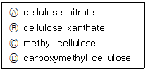
- Ⓐ, Ⓑ
- Ⓑ, Ⓒ
- Ⓒ, Ⓓ
- Ⓐ, Ⓓ
(정답률: 33%)
49. 셀룰로오스는 D-glucopyanose 잔기로 구성된 고분자 물질이다. 다음 중 셀룰로오스의 잔기 연결 방식은?
- α-1, 4
- α-1, 6
- β-1, 4
- β-1, 6
(정답률: 72%)
50. 침엽수재의 주요 헤미셀룰로오스(hemicellulose)로서 가장 많은 양이 분포하고 있으며 산으로 쉽게 분해할 수 있는 것은?
- Glucomannan
- Arbinoglucuronoxylan
- Arbinogalactan
- Glucuronoxylan
(정답률: 63%)
51. D-glucose는 분자 내 헤미아세탈을 형성하여 pyranose환으로 전환된다. 이때 분자 내 결합에 참여하는 glucose의 탄소 번호는?
- 1번 탄소와 6번 탄소의 에테르 결합
- 1번 탄소와 5번 탄소의 에테르 결합
- 3번 탄소와 5번 탄소의 에테르 결합
- 1번 탄소와 4번 탄소의 에테르 결합
(정답률: 39%)
52. 셀룰로오스의 산화반응에서 있어서 C2와 C3사이를 개열시키면서 dialdehyde형 구조를 새로 형성시키는 산화제는?
- 과산화수소
- 이산화염소
- 이산화질소
- 과요오드산
(정답률: 49%)
53. 목재 중에 존재하는 방향족 화합물을 옳게 조합한 것은?
- 리그닌, 펙틴, 리그난
- 리그닌, 리그난, 탄닌
- 리그닌, 테르펜, 리그난
- 리그닌, 펙턴, 탄닌
(정답률: 38%)
54. 어떤 용기 중에 다음과 같은 셀룰로오스 시료가 혼합되어 있다. 이 셀룰로오스의  과
과  는 약 얼마인가?
는 약 얼마인가?
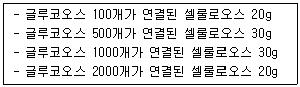
 =870,
=870,  =330
=330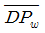
=330, =870
=870 =450,
=450, 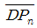
=420 =420,
=420,  =450
=450
(정답률: 25%)
55. 함수율이 10%인 목분 시료 2g을 유기용매로 추출하였더니 0.03g의 추출물이 얻어졌다. 이 시료의 유기용매 추출물의 함량은 얼마인가?
- 1.37%
- 1.47%
- 1.57%
- 1.67%
(정답률: 34%)
56. 리그닌에 대한 설명으로 틀린 것은?
- 침엽수재의 리그닌 함량이 활엽수재보다 대체적으로높다.
- 리그닌의 탄소 함량이 셀룰로오스의 탄소 함량보다 낮다.
- 크라프트 펄프화법에 의해 생성된 리그닌을 크라프트리그닌이라고 한다.
- 리그닌은 280mm 부근의 자외선을 흡수한다.
(정답률: 50%)
57. 2분자의 페닐프로파노이드(phenylpropanoid)가 측쇄 위치의 탄소 간에 결합한 C6-C3-C3-C6골격으로 이루어진 화합물군을 무엇이라 하는가?
- 프라바노이드류
- 리그닌류
- 리그난류
- 탄닌류
(정답률: 36%)
58. 셀룰로오스의 유도체 및 그의 용도를 서로 연결시킨 것으로 옳지 않은 것은?
- Nitrocellulose - 도료, celluloid
- Acetylcellulose - 필름, 테이프, 담배 필터
- Cellulose Xanthate - Viscose rayon
- Carboxymethyl cellulose - 부직포 절연재료
(정답률: 47%)
59. 목재의 원소 조성 중 탄소:수소:산소의 비를 옳게 나타낸 것은?
- 44:6:50
- 44:50:6
- 50:44:6
- 50:6:44
(정답률: 47%)
60. 침엽수재 리그닌을 구성하는 대표적인 기본 단위를 나타내는 그림은?
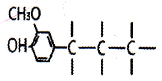
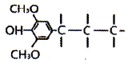
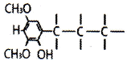
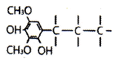
(정답률: 60%)
4과목: 임산제조학
61. 함수율이 60%인 소나무 관재의 무게가 2500g이다. 건량기준 함수율 12%가 되게 건조하려면 시험재의 무게는 몇 g이 될 때까지 건조시켜야 하는가?
- 1700g
- 1750g
- 1800g
- 1850g
(정답률: 40%)
62. 화학펄프에 해당하지 않는 것은?
- 아황산펄프
- 알칼리펄프
- 크라프트펄프
- 리파이너펄프
(정답률: 45%)
63. 쇄목펄프 제조에 영향을 주는 수종에 대한 설명으로 옳지 않은 것은?
- 목재의 함수율이 낮을수록 마쇄가 용이하다.
- 재색이 희고 강도가 우수하고 섬유장이 긴 것이 좋다.
- 가문비나무와 전나무는 펄프품질 및 생산성이 높고 동력소비가 적은 편이다.
- 비중이 높은 활엽수는 강도가 낮고 재색이 나쁘므로 사용에 제한을 받는다.
(정답률: 34%)
64. 목재 접착제의 성능에 관한 인자가 아닌 것은?
- 농도
- 분자구조
- 표면장력
- 퇴적시간
(정답률: 48%)
65. 셀룰로오스와 리그닌의 탄화에 의한 탄소 결정자의 성장에 대한 설명으로 옳은 것은?
- a축 방향에 대하여 리그닌 탄소결정자의 성장은 탄화온도와 함계 감소한다.
- a축 방향에 대하여 셀룰로오스 탄소결정자의 성장은 탄화온도와 함께 증가한다.
- c축 방향에 대하여 리그닌 탄소결정자의 성장은 탄화온도와 함께 증가하여 성장한다.
- c축 방향에 대하여 셀롤로오스 탄소결정자의 성장은 탄화온도와 함께 감소하여 후퇴한다.
(정답률: 39%)
66. 목재의 접착공정 순서로 옳은 것은?
- 피착재 조정 → 도포 → 압착 → 제호 → 퇴적 → 후처리
- 피착재 조정 → 제호 → 도포 → 퇴적 → 압착 → 후처리
- 제호 → 피착재 조정 → 압착 → 도포 → 퇴적 → 후처리
- 도포 → 제호 → 피착재 조정 → 퇴적 → 압착 → 후처리
(정답률: 40%)
67. 목재추출 성분 중에 수용성의 폴리페놀은?
- 정유
- 탄닌
- 수지
- 유지
(정답률: 40%)
68. 도장공정 시 도막의 부착성이 저하되거나 도장의 내구성면에서 악영향을 주는 목재의 함수율 기준은?
- 5% 이상
- 10% 이상
- 15% 이상
- 20% 이상
(정답률: 37%)
69. 종이 제조 과정에서 기계적 처리를 하여 펄프의 질을 초지에 알맞도록 조절하는 것은?
- 고해
- 충전
- 정정
- 사이징
(정답률: 62%)
70. 종이의 습윤지력 중강제로서 사용되고 있는 첨가제가 아닌 것은?
- 양성전분
- 요소-포름알데히드 수지
- 멜라민-포름알데히드 수지
- 에폭시화 폴리아미드 수지
(정답률: 47%)
71. 무디어진 쇄목석의 날을 세우는 장치를 무엇이라고 하는가?
- 목립
- 피트
- 핑거바
- 매거진
(정답률: 44%)
72. 3매 합판에서 중량 3000g인 중판의 양면에 접착제를 도포하였다. 도포 후 중판의 중량이 3800g, 중판의 폭이 1m, 중판의 길이가 2m라고 한다면 중판 양면의 접착제 도포량은?
- 300g/m2
- 350g/m2
- 400g/m2
- 450g/m2
(정답률: 49%)
73. 섬유판의 원료로 적합한 목재의 비중은?
- 0.1 ~ 0.2
- 0.4 ~ 0.6
- 0.8 ~ 1.0
- 1.2 ~ 1.4
(정답률: 50%)
74. 목재의 건조 시 할렬 예방 방법으로 옳지 않은 것은?
- 엔드 코팅을 한다.
- 저온에서 건조한다.
- 건조 초기에 건습구 온도 차를 크게 한다.
- 재목의 횡단면이 잔적에서 돌출되지 않게 한다.
(정답률: 50%)
75. 천연건조적월은 일일평균온도가 25℃이상인 날짜가 연속해서 며칠 이상일 때를 말하는가?
- 15일
- 20일
- 25일
- 30일
(정답률: 53%)
76. 합판에 대한 설명으로 옳지 않은 것은?
- 넓은 면적의 판재를 만들 수 있다.
- 결점부위를 인위적으로 분산, 제거할 수 있다.
- 목재의 강도 및 물리적 성질의 이방성을 크게 할 수 있다.
- 접착제를 선택하여 용도에 따른 내구성과 내수성을 갖출 수 있다.
(정답률: 59%)
77. 목재 도장가공에 있어 도막에 투명성의 색을 부여하기 위하여 사용되는 것은?
- 염료
- 안료
- 용제
- 희석제
(정답률: 40%)
78. 파티클보드에 대한 설명으로 옳지 않은 것은?
- 파티클 길이가 두께에 비하여 큰 재료가 제작에 유리하다.
- 폐목질 자원 등을 기계적으로 파쇄 및 삭편화하여 제작한다.
- 경제적인 제조를 위하여 포플러나 사시나무류는 잘 사용하지 않는다.
- 파티클보드 원료는 가급적 원료수종의 비중이 낮고 압축도가 1보다 큰 것을 주로 사용한다.
(정답률: 41%)
79. 고해가 종이의 품질에 미치는 영향으로 옳지 않은 것은?
- 종이의 지합이 양호해진다.
- 종이의 밀도는 높아지고 두께가 얇아진다.
- 종이의 투기도가 낮아지고 평활도가 올라간다.
- 종이의 불투명도가 높아지고 치수안정성이 좋아진다.
(정답률: 42%)
80. 잔목(sticker)에 대한 설명으로 옳지 않은 것은?
- 잔적 내 통풍이 잘 되기 위하여 사용한다.
- 건조 재목의 두께가 클수록 잔목 간격은 넓게 한다.
- 건조 재목의 치수가 클수록 두꺼운 잔목을 사용한다.
- 건조 재목의 건조속도가 빠를수록 좁은 잔목을 사용한다.
(정답률: 47%)
5과목: 목재보존학
81. 목재를 화학개질가공하여 얻는 장점이 아닌 것은?
- 강도 증가
- 방부성 부여
- 내화성 부여
- 치수안정성 증가
(정답률: 38%)
82. 다음 설명에 해당하는 혼합약제가 아닌 것은?
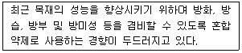
- 미날리스
- 불화나트륨
- 피레소오트
- 크롬화염화아연
(정답률: 26%)
83. 목재의 가소화 방법에 해당하지 않는 것은?
- 증기 처리법
- 요소 처리법
- 금속화 처리법
- 액체암모니아 처리법
(정답률: 40%)
84. 목재 연부후균에 대한 설명으로 옳지 않은 것은?
- 리그닌을 주로 분해한다.
- 부후균에 의한 목재가해 형태와 동일하지 않다.
- 헤미셀룰로오스보다 글루칸을 더 빨리 분해시킨다.
- 피해를 받은 목재는 표면이 종횡으로 할렬이 일어난다.
(정답률: 36%)
85. 주로 건조재를 가해하는 해충은?
- 나무좀
- 하늘소
- 일본흰개미
- 히라다가루나무좀
(정답률: 50%)
86. 목재의 세포내강에만 방부제로 피복시킨 후 과잉의 방부제를 회수하는 방부처리법에 해당하지 않는 것은?
- 뤼핑법
- 로리법
- 공세포법
- 교차 가압감압법
(정답률: 29%)
87. 갈색부후균에 대한 설명으로 옳은 것은?
- 목재 세포벽을 구성하는 다당류와 리그닌 모두를 분해한다.
- 부후 초기에 셀룰로오스를 분해하므로 목재의 강도가 급격히 감소한다.
- 목재 세포벽의 부후 정도에 따라 동시 분해형과 선택 분해형으로 구분한다.
- 고함수율 상태에서 목재가 오랫동안 있게 되는 경우 목재 표면에서 발생하는 피해이다.
(정답률: 50%)
88. 방화제가 화재를 방지하기 위한 작용이 아닌 것은?
- 하강작용
- 피복작용
- 흡열작용
- 분해작용
(정답률: 34%)
89. 목재의 기상열화를 발생하는 인자로 옳지 않은 것은?
- 열
- 수분
- 가시광선
- 환경오염물질
(정답률: 36%)
90. 내후성이 큰 변재에 해당되는 수종은?
- 잎갈나우
- 오리나무
- 계수나무
- 박달나무
(정답률: 22%)
91. 목재의 화학 조성분 중 열분해 시 가장 높은 온도에서 분해되는 고분자 물질은?
- 회분
- 리그닌
- 셀룰로오스
- 헤미셀룰로오스
(정답률: 43%)
92. 목재보존 전처리에 대한 설명으로 옳지 않은 것은?
- 전처리에는 기계적 가공과 처리 전 목재의 건조 등이 있다.
- 건조에는 천연건조, 인공건조, 증기처리, 감압처리 등이 있다.
- 확산법으로 처리하기 위해서는 목재를 인공건조하여야 한다.
- 기계적 가공에는 박피, 인사이징, 프리커팅, 프리프레이밍 등이 있다.
(정답률: 49%)
93. 목재 부후균 생장에 필요한 인자가 아닌 것은?
- 온도
- 수분
- 영양원
- 이산화탄소
(정답률: 50%)
94. 10×10×400cm인 잣나무 각재에 방부제 주입 후 6kg이 증가하였다면 주입량은?
- 0.00015kg/m3
- 0.015kg/m3
- 1.5kg/m3
- 150kg/m3
(정답률: 14%)
95. 갓 벌목한 근주 원목을 박피하여 세워 놓고 수액이 증발함에 따라 수용성 방부제가 주입 되도록 처리하는 방법은?
- 베델법
- 충세포법
- 수액치환법
- 가압교체처리법
(정답률: 43%)
96. 목재의 부후에 대한 설명으로 옳지 않은 것은?
- 버섯은 부후균에 속한다.
- 부후균은 자냥균에 속하는 것이가장 많다.
- 부후재의 빛깔에 따라 백색부후, 갈색부후, 연부후 등으로 나뉜다.
- 부후균이 분비하는 효소 작용에 의해 목재 세포벽의 구성성분이 분해되는 것이다.
(정답률: 45%)
97. 상압처리법 중 침지법의 일종으로 특별한 설비가 필요 없고 단시간 처리로도 효과가 높은 방부처리법은?
- 도포법
- 분무법
- 확산법
- 온냉욕법
(정답률: 32%)
98. 목재의 치수안정을 위해 분자구조 단위 사이에 화학결합을 하는 것으로 치수안정에 가장 효과적인 방법은?
- 가교결합
- 피복처리
- 직교적층
- 열안정화처리
(정답률: 33%)
99. 목재 변색균의 방지 대책으로 옳지 않은 것은?
- 수입된 소나무는 물 속에 저장한다.
- 생재의 경우 건조하지 않는 것이 좋다.
- 벌채 후 야적할 경우 곧바로 박피를 한다.
- 비를 피할 수 있으며 통풍이 잘되는 곳에 잔적한다.
(정답률: 45%)
100. 목재의 연소성에 대한 설명으로 옳지 않은 것은?
- 온도가 상승하여 350~450℃가 되면 목재는 자연 착화된다.
- 목재가 연소되는 위험온도는 260℃이며 목재 방화의 기준온도가 된다.
- 목재에 수분이 없는 상태에서 100℃를 넘어 가면 열분해가 이루어진다.
- 목재가 공기 중의 산소와 화학 반응하여 열과 빛을 내고 타는 산화현상을 말한다.
(정답률: 52%)